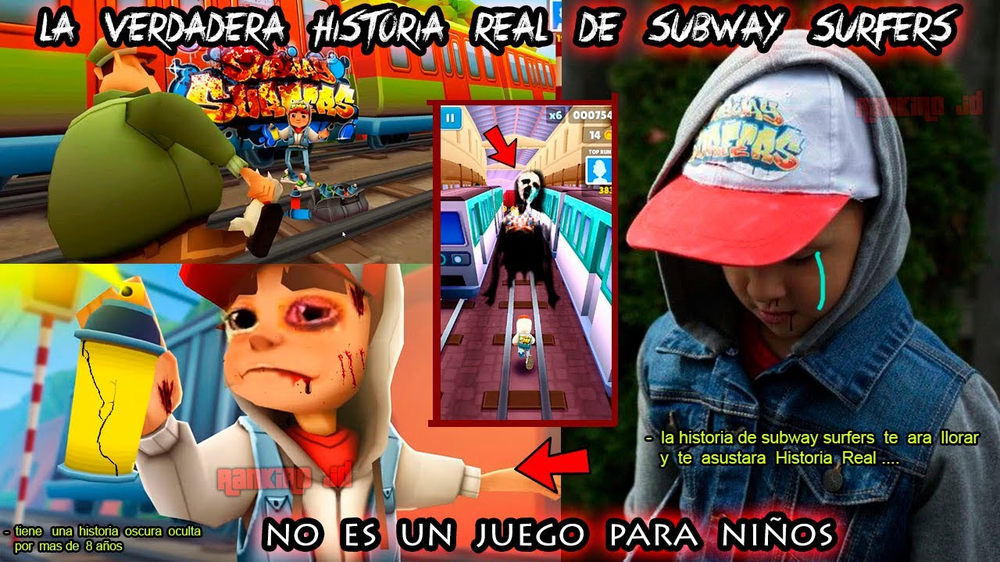

SUBWAY SURFERS
'Subway Surfers', es un videojuego de plataformas para móviles codesarrollado por Kiloo,1 una empresa privada con sede en Dinamarca y SYBO Games.2 Está disponible para plataformas Microsoft Windows, Android, iOS, Kindle, y Windows Phone. Los usuarios del juego toman el papel de un adolescente vándalo, quien al ser sorprendido haciendo grafitis en una estación de tren, corren por las vías férreas para poder escapar del inspector y su perro. A medida que el vándalo corre, atrapa monedas de oro suspendidas en el aire mientras al mismo tiempo evita colisionar con los trenes y otros objetos. Los objetos especiales, tales como la caza semanal, pueden dar lugar a un premio en el juego.
Record Mundial!!!
Randy Gardner (nacido alrededor de 1948) es el poseedor del récord de más tiempo que un humano ha pasado sin dormir.
En 1964, Gardner, un estudiante de secundaria en San Diego, California, permaneció despierto durante 264,4 horas (11 días y 25 minutos).
Conocido por: Más tiempo sin dormir Ocupación: poseedor de récords
Nacido: 1948 (edad 70–71)
Vesna Vulović, azafata que ostenta el record mundial Guinness de sobrevivir a la caida mas alta sin paracaidas de sobrevivir a la altura : 10.160 m (33.330 pies; 6,31 mi).

¿Cual es su historia?
La historia oficial es sencilla. Dos compañías de Dinamarca se ponían en contacto para desarrollar un título que mezclara tablas, railes, endless runner y gráficos bonitos para crear toda una bomba. Pero según indican algunas fuentes, esto no fue todo lo que inspiró a Subway Surfers.
La historia Aterradora
La historia falsa que apareció en Twitter sobre Subway Surfers. Un usuario de Twitter al azar tuiteó sobre el juego diciendo que Subway Surfers fue creado por el creador en memoria de su hijo fallecido. El tuit también declaró que su hijo perdió la vida debido a un accidente en las vías del tren mientras patinaba.24 de juny 2021